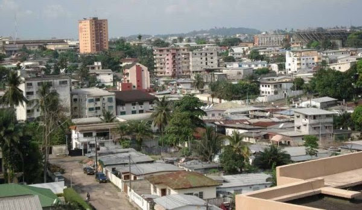

República Democrática do Congo |
|
A República Democrática do Congo, denominada, entre 1971 e 1997, República do Zaire, e por vezes designada como RDC, RD Congo, Congo, R.D. ou Congo-Kinshasa para diferenciá-la da vizinha República do Congo (que também é chamada Congo-Brazzaville ou Congo-Brazavile) é um país da África Central.Após a separação do Sudão do Sul, em 2011, passou a ser o segundo maior país da África em área - superado apenas pela Argélia. Faz fronteira a norte com a República Centro-Africana e com o Sudão do Sul, a leste com Uganda, Ruanda, Burundi e a Tanzânia, a leste e a sul com a Zâmbia, a sul com Angola e a oeste com o Oceano Atlântico, com o enclave de Cabinda e com o Congo.A capital e maior cidade é Kinshasa. p align="left"> Com estimativas populacionais entre 82 e 86 milhões de habitantes para 2017,a República Democrática do Congo é o quarto país mais populoso do continente africano, atrás apenas da Nigéria, da Etiópia e do Egito, e o décimo sexto do mundo. É também a mais populosa nação francófona do globo (que possuí a língua francesa como língua oficial), à frente da França. A população democrática-congolesa é composta, em sua maioria absoluta, por cerca de duzentos grupos étnicos, em especial da família Bantu (81% da população), sendo a etnia congolesa a mais comum (aproximadamente 1/3 dos democráticos-congoleses, em 2011). Minorias étnicas importantes incluem Mangbetu-Azande, Mongo e Luba. |